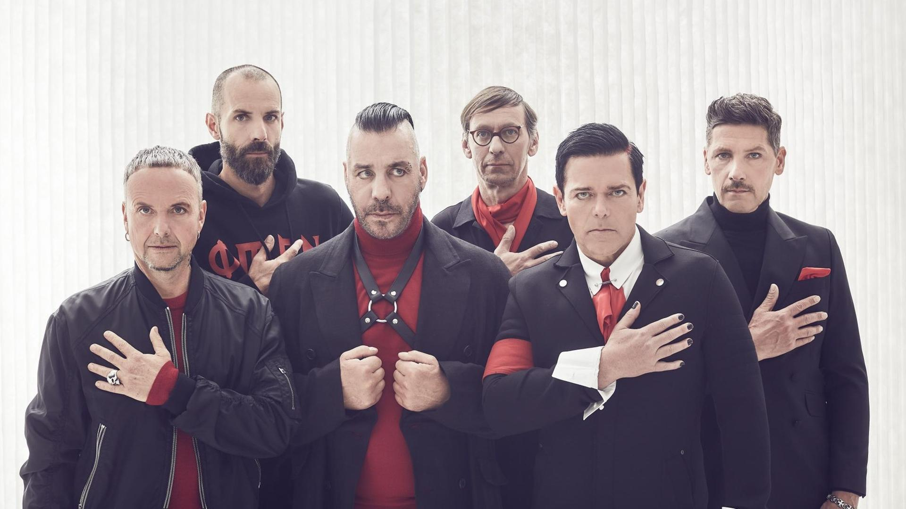
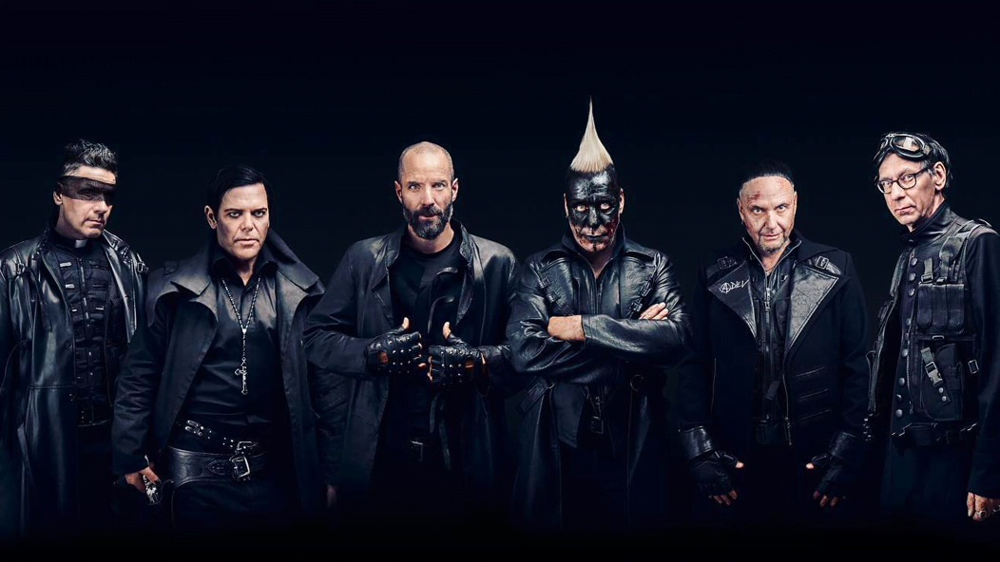
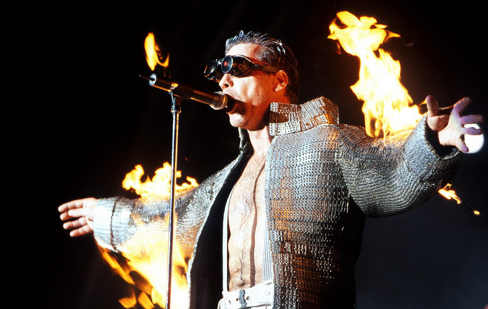

La historia de Rammstein
Rammstein es una banda alemana de metal industrial formada en Berlín en 1994. Con su estilo potente, letras crudas y un enfoque visual impactante, han marcado un antes y un después en la escena musical global. Desde sus primeros días, la agrupación liderada por Till Lindemann ha apostado por una estética provocadora, fusionando música agresiva con poesía oscura y elementos teatrales. Su nombre proviene del trágico accidente aéreo en la ciudad de Ramstein, lo que desde un inicio dio pistas del enfoque crudo y sin filtros que adoptarían en su arte.
El debut discográfico con Herzeleid (1995) y la consagración con Sehnsucht (1997), que incluyó el icónico tema “Du Hast”, posicionaron a Rammstein como pioneros del Neue Deutsche Härte. A lo largo de los años, han evolucionado musicalmente sin perder su esencia, explorando sonidos más melódicos o electrónicos en discos como Mutter (2001) y Rosenrot (2005), pero siempre manteniendo intacta su identidad brutal, teatral y desafiante. Cada álbum representa una nueva era creativa para la banda, con producciones audiovisuales de alta calidad y letras que abordan desde el amor hasta la crítica social más punzante.
Los conciertos de Rammstein son reconocidos mundialmente por su despliegue de efectos especiales, coreografías militares y uso intensivo de fuego y pirotecnia. Cada presentación es una experiencia única y sensorial donde la música se convierte en espectáculo total. No es raro ver a los miembros envueltos en llamas, plataformas móviles, lanzallamas y maquinaria escénica que transforma el escenario en una obra de arte viviente. Esta obsesión por el detalle ha hecho que sus giras sean de las más impresionantes y esperadas del rock mundial.
Más allá del idioma —pues cantan casi exclusivamente en alemán— Rammstein ha conquistado audiencias de todo el mundo. Han logrado lo impensable: hacer del alemán un idioma del metal internacional, derribando barreras lingüísticas con la fuerza de su mensaje y la universalidad de su energía. Desde América hasta Asia, sus seguidores llenan estadios año tras año, fieles a una banda que no se rinde a las modas y permanece auténtica, incómoda y profundamente humana.
Rammstein no es simplemente una banda, es un fenómeno cultural que desafía etiquetas y rompe esquemas. Ya sea por sus letras provocadoras, sus videoclips cinematográficos o su impacto en la cultura popular, su legado sigue creciendo con cada disco, cada show, cada explosión. Son fuego, poesía, oscuridad y rebeldía convertidos en sonido.